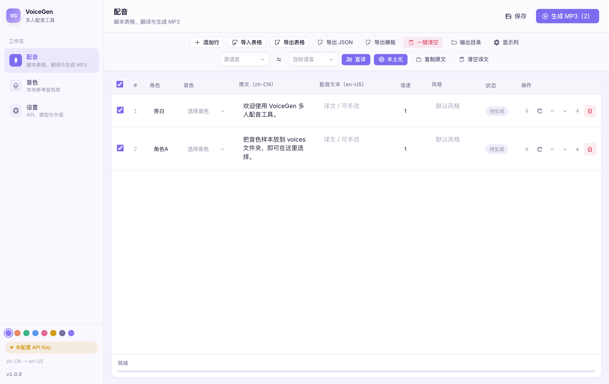
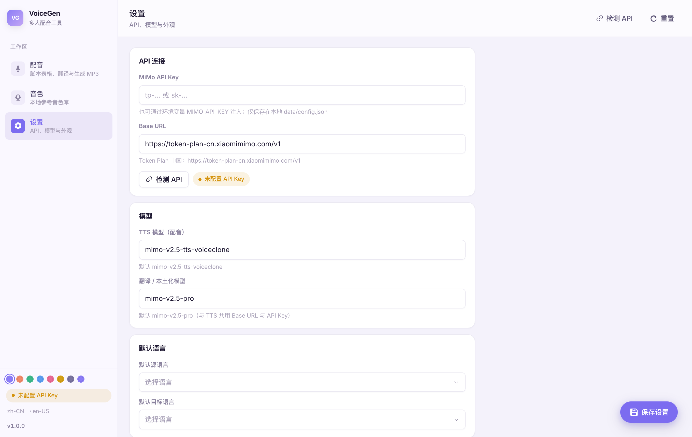
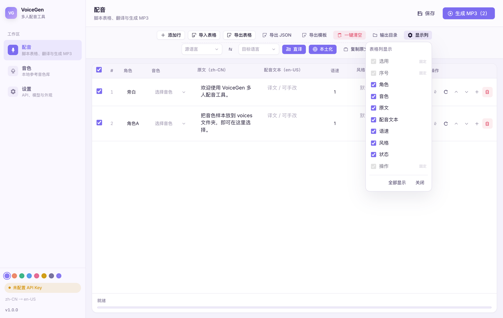
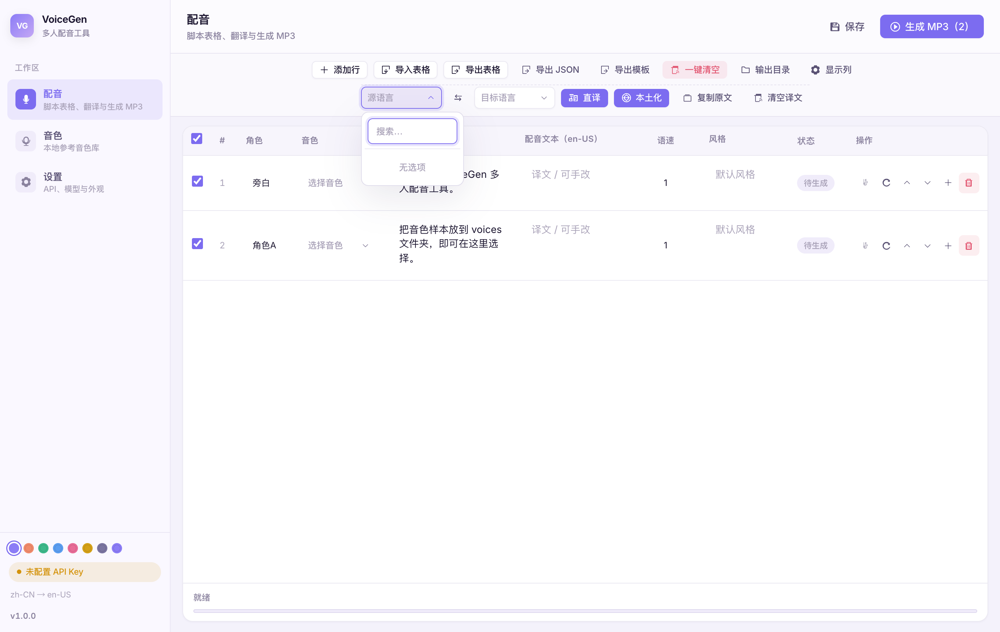
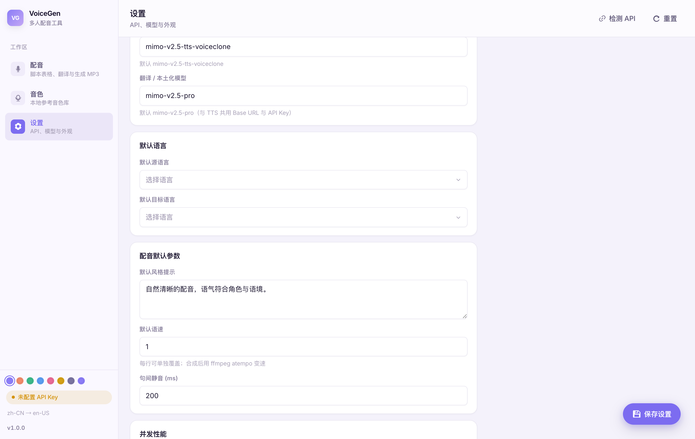
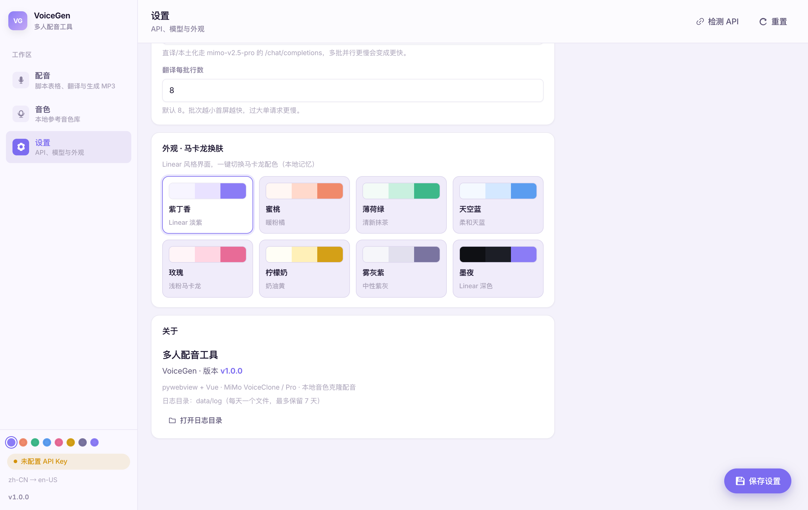
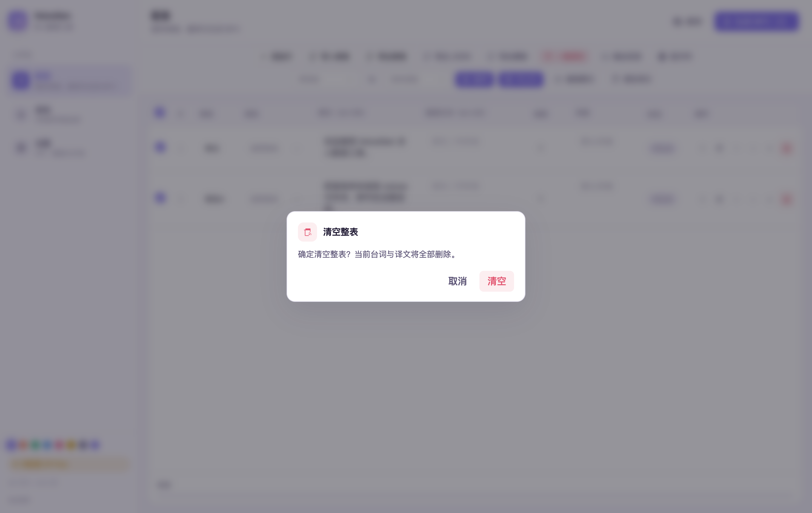

版本：v1.0.0
界面截图来自应用真实 UI（示意数据）
仓库：https://github.com/shukeCyp/VoiceGen
本教程按「从安装到导出 MP3」的真实操作顺序编写。每一步对应软件里的具体按钮与面板。
启动软件后，主界面分为：
| 区域 | 作用 |
|---|---|
| 左侧导航 | 切换「配音 / 音色 / 设置」三个页面 |
| 顶部标题栏 | 当前页名称 + 右侧主操作按钮（如「生成 MP3」） |
| 中间工作区 | 表格 / 音色列表 / 设置表单 |
| 底部状态栏 | 进度、完成信息 |

怎么用
左下角有：
v1.0.0入口：左侧 → 设置

| 字段 | 说明 |
|---|---|
| MiMo API Key | Token Plan 密钥，一般以 tp- 开头 |
| Base URL | 默认
https://token-plan-cn.xiaomimimo.com/v1，一般不用改 |
| 字段 | 模型 | 用途 |
|---|---|---|
| TTS 模型 | mimo-v2.5-tts-voiceclone |
生成配音（克隆音色） |
| 翻译 / 本土化模型 | mimo-v2.5-pro |
直译 / 本土化（改文字，不生成声音） |
启动时如果已经保存过 Key，会自动检测一次，无需每次手动点。
入口：左侧 → 音色
有两种方式：
voices/ 文件夹，再点
刷新规则：文件名去掉扩展名 = 音色名。
例如 Alex.mp3 → 下拉框里显示 Alex。
操作列第一个按钮（耳机图标）：
点 删除，会弹出确认框，确认后从 voices/
移除文件。
点 打开目录，用系统文件管理器打开
voices/，方便批量拷贝。
入口：左侧 → 配音
回到主界面（见第 1 节截图）。
| 列 | 怎么用 |
|---|---|
| 选用（勾选） | 勾上的行才会参与「生成 / 翻译」 |
| # | 行号 |
| 角色 | 显示名，如「甲」「旁白」 |
| 音色 | 下拉选择 voices/ 里的音色 |
| 原文 | 源语言台词 |
| 配音文本 | 真正拿去 TTS 的文本；翻译结果写这里；为空则用原文 |
| 语速 | 如 1.0、1.05（合成后 ffmpeg 变速） |
| 风格 | 可选，给 TTS 的风格提示（支持多行） |
| 状态 | 待生成 / 生成中 / 完成 / 失败 |
| 操作 | 试听、重新生成、上下移、插入、删除 |
工具栏：
表头最左侧勾选框 = 全选 / 取消全选 所有行的「选用」。
工具栏按钮（中文）：
| 按钮 | 功能 |
|---|---|
| 导入表格 | 从本机选 CSV/JSON 导入台词 |
| 导出表格 | 导出当前表（中文表头 CSV） |
| 导出 JSON | 导出 JSON 格式 |
| 导出模板 | 导出空白示例表，方便填完再导入 |
| 一键清空 | 清空整表（有确认框） |
角色,音色,原文,配音文本,语速,风格,启用导入也兼容英文表头：speaker,voice,text,tts_text,speed,style,enabled。
窗口较小时，「语速」等列容易被挤窄。

固定列（不能关）：选用、序号、操作。
可隐藏：角色、音色、原文、配音文本、语速、风格、状态。
原文与配音文本至少会保留一列，避免表格只剩空壳。
工具栏第二行是语言与翻译区：

下拉支持搜索（不是系统原生下拉框）。
mimo-v2.5-pro →
POST {Base URL}/chat/completionsmimo-v2.5-pro| 按钮 | 作用 |
|---|---|
| 复制原文 | 把原文整列复制到配音文本（不调 API） |
| 清空译文 | 清空所有配音文本 |
源语言 = 目标语言时：直译不会调 API，直接复制原文。
output/设置 → 并发性能：

| 参数 | 含义 |
|---|---|
| TTS 并发生成线程数 | 同时请求几条配音（默认 4） |
| 翻译并发线程数 | 同时跑几批翻译 |
| 翻译每批行数 | 每批发给大模型多少句 |
改完后记得 保存设置。
生成过程中右上角会出现 取消，可中断任务。
在配音表 操作 列：
| 图标/按钮 | 功能 |
|---|---|
| 耳机 | 试听本条已生成的音频（需状态为「完成」） |
| 刷新 | 只重做这一条，不重新合并整轨 MP3 |
| ↑ ↓ | 移动顺序 |
| + | 下方插入行 |
| 删除 | 删行 |
流程建议：
设置页可切换马卡龙主题；也可点左侧导航底部色点。
主题会记住，下次打开自动恢复。

data/log/voicegen-YYYY-MM-DD.log危险操作（如清空整表、删除音色）会弹出应用内对话框，不是系统原生弹窗：

| 问题 | 处理 |
|---|---|
检测 API 失败 / WinError 10061 |
检查网络；关闭未启动的系统代理；确认 Base URL |
| 进度条中文乱码 | 更新到最新版 |
| 没有 ffmpeg | 用官方打包的 exe（已内置）；开发环境可运行
python scripts/download_ffmpeg_windows.py |
| 语速列被挤没 | 用「显示列」隐藏其它列，或拉大窗口 |
| 翻译很慢 | 正常：走大模型；可调「翻译并发 / 批大小」 |
| 生成失败 | 打开 data/log 看当天日志 |
output/ 取最终文件截图由教程脚本自动采集自当前 UI；若界面有小幅改版，以你本机软件为准。